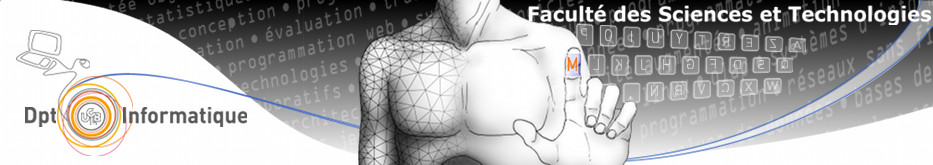

Thierry RAFFIN
- Adresse :
- 26 avenue du 8 mai 1945
- 69500 Bron
- France
- Téléphone :
- 06.60.41.56.85
- Mail :
- thierry.raffin3@orange.fr


2017-2018
Master 2 CCI à l'Université Claude Bernard Lyon 1
Master 2 CCI - Compétences Complémentaires en Informatique - Systèmes d’Information pour la Production

2015
Certification ECAM Expert Lean Manager
Formation au Lean Déploiement à l'ECAM Lyon : Certification ECAM Expert équivalence Yellow Belt

1988-1993
Diplome d’Ingenieur généraliste à l'ECAM Lyon (Ecole Catholique des Arts et Métiers)
2017
Ets TECHNILYS
Responsable Atelier de Fabrication
Réorganisation des postes de fabrication (5S) et mise en place de fiches de poste pour la fabrication et le controle dans l'objectif de réussir l'audit de certification produit (audit réussi et homologation produit réussie)
2012-2013
EIRALP
Responsable Technique
Diffusion d'une nouvelle solution d’isolation thermique, Solaire, Pompe à chaleur (Règlementation Thermique RT2012)
2009-2012
SAS HRM KENEA
President SAS : Responsable du B.E. Solaire Photovoltaïque / Responsable de Chantier
Création Société, Gestion et Exploitation. Domaines d’activité : Photovoltaïque, Pompe à Chaleur, Eau Chaude Solaire, Ballon Thermodynamique
2008-2009
ISA Productions puis IDEOSUN
Responsable du Bureau d’Etudes Solaire Photovoltaïque
Installation de Panneaux Solaires Photovoltaïques
2005-2008
Société R.E.S. (Raffin Energies Solaires)
Création de la société puis Gérant
Installation de Panneaux Solaires Photovoltaïques
1999-2004
Ets LELEU
Responsable Logistique - Ordonnancement - Planification - Amélioration Continue - Informatique
Usinage de pièces en aluminium issues de fonderie dans le secteur de l’automobile.
1995-1999
Ets LELEU
Responsable de l’Atelier de Fabrication (Usinage) - Planification - Informatique
Usinage de pièces en aluminium issues de fonderie dans le secteur de l’automobile.
Gérer les moyens de Production : Gestion du Parc Machines (maintenance, potentiel),
Organiser le travail en équipes : 60 personnes + gestion des besoins en intérim, Equipes en 3x8
Management du Personnel : Entretien personnel, Plan de formation, Cellule Autonome
Lean Management : Chantier Kaizen, Amélioration Continue, 5S, Réunion 5 minute (AIC), Management Visuel ...
Mise en place de la norme qualité ISO9001et de la norme automobile EAQF dans l’atelier. (audit réussi)
Formation du Personnel, Soutien Technique, Sensibilisation du personnel aux risques (sécurité des chantiers)
Règles d’hygiène et de sécurité : Sauveteur Secouriste du Travail dans l’Industrie
Maitriser les techniques d’Ordonnancement et de Planning
Gestion de la charge (Planning en fonction des commandes internes de la GPAO et des disponibilités des composants)
Gérer la Logistique : Réception/Expédition, Gestion des Transporteurs, Gestion de la sous-traitance industrielle
Maitriser les techniques de conduite de projet, de réunions d’avancement
Suivi des chantiers (Equipe interne, Intervenants en sous-traitance, autre corps de métiers)
Systèmes d’information (Merise, UML), Base de données (Oracle / SQL)
Logiciels ERP (SAP, PMIcs de GTI Industrie / Cegid) : Utilisation, Configuration, formation et déploiement
Logiciels de Gestion des stocks, Gestion de programmes CN : Utilisation, Configuration et installation
Modélisation géométrique, CFAO, prototypage rapide (CATIA, Proengineer, SolidWorks, TurboCad), Simulation PVSOL
Logiciels de Planification : MS Project - Maîtrise du PC et des réseaux / Windows / Pack Office
Langages de Programmation : Shell, JAVA, Langage C, Microsoft VB6 et Windev
Systèmes d’exploitation (Unix, GNU/Linux, Debian, Fedorra, Ubuntu), Internet (http, xml), Image (VRML)
Interopérabilité (OWL, Web services), Virtualisation, Containers (Docker), OpenStack.
Systèmes d’information collaboratifs, Introduction au Cloud Computing (Iaas, Saas,Paas)
PLM, Ingénierie Simultanée (Standard STEP), Modélisation des Processus (BPMN)
Programmation des robots Stäubli - Automate Télémécanique - Impression 3D (Ultimaker 2+)
Gestion d’un parc informatique (Gestion d’un parc de 2 serveurs et 30 postes Clients)
Création d’Entreprise (administrative EURL - SARL - SAS / relation des banques / recherche d’incubateur)
Gérance d’Entreprise (Gestion budgétaire / Tableaux de suivi d’activité / Ressources humaines)
Comptabilité (saisie comptable en liaison directe avec le cabinet comptable)